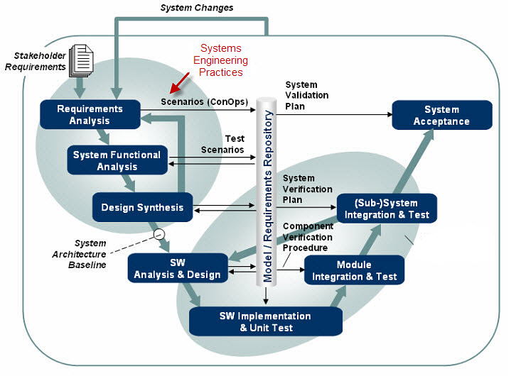
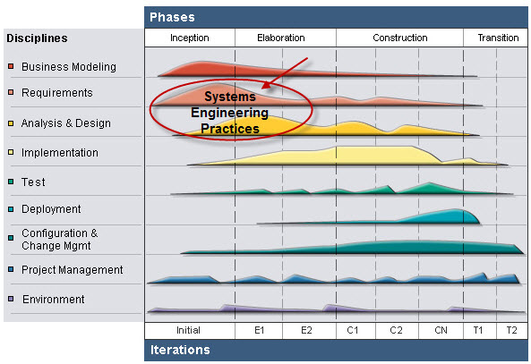

| SE Practices - Introduction |
 |
|
IntroductionThe new systems engineering practices reflect the vast experience accumulated by the IBM Rational consultants during various Systems Engineering engagements in a number of different industries. This process guidance covers an area starting from stakeholder needs and finishing with a hand-off of the System Architecture baseline to the systems development groups. These practices could be combined in different ways and could play as part of different types of lifecycles. One example is the traditional V lifecycle shown below where the SE practices are part of the front-end domain (see red arrow).  An alternative view of how the new Systems Engineering practices fit in an overall iterative process framework is shown below:  For two different workflows, representing two examples on how to combine and use these SE practices, start with: Systems Engineering Practices
|
Licensed Materials - Property of IBM |